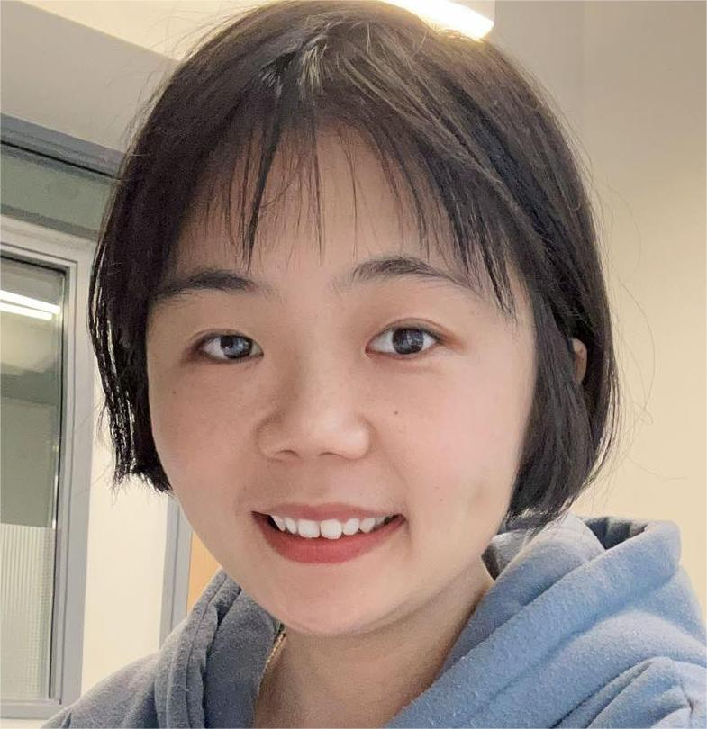

I received my PhD in 2024 from the School of Mathematics at Hunan University , where I was advised by Prof. Yong Huang. I am currently a Postdoctoral Fellow at TU Wien, working with Mohammad N. Ivaki. My research primarily focuses on convex geometry, partial differential equations and geometric flows. I am particularly interested in solving Monge-Ampère type equations that stem from geometry. I am also interested in exploring the connections between geometric inequalities and geometric flows. Here are the links to my profiles on MathSciNet, ResearchGate, ORCID and arXiv.